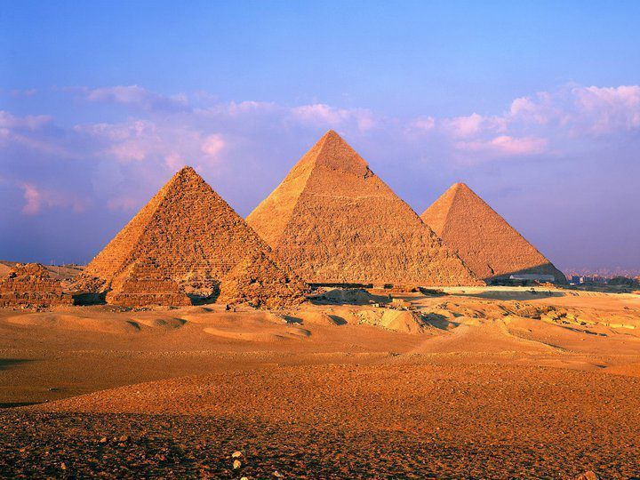

As pirâmides egípcias são monumentos antigos construídos no Egito, principalmente durante o período do Antigo Império (cerca de 2700 a.C. a 2200 a.C.), que serviam como tumbas para os faraós e membros da elite. Mais do que simples túmulos, elas representavam o poder e a divindade do faraó, além da crença na vida após a morte. Os egípcios acreditavam que, ao preservar o corpo do faraó, ele continuaria reinando no além. A maioria das pirâmides está localizada ao longo do rio Nilo, sendo as mais famosas as de Gizé: a Grande Pirâmide de Quéops, a pirâmide de Quéfren e a de Miquerinos. Em Saqqara, está a pirâmide de degraus de Djoser, a primeira construída. Elas foram feitas com milhares de blocos de pedra e erguidas com o trabalho organizado de muitos trabalhadores. Até hoje, parte das técnicas utilizadas permanece um mistério. A Grande Pirâmide de Gizé, com mais de 4.500 anos, ainda impressiona pela sua grandiosidade e resistência ao tempo. Seu alinhamento com astros e passagens internas ainda intriga estudiosos e exploradores.
Veja a seguir a lista das primeiras pirâmides do Egito, verdadeiros marcos históricos que abriram caminho para as grandiosas construções do Antigo Egito. Essas estruturas iniciais revelam a evolução da arquitetura e a riqueza cultural de uma civilização milenar, mostrando como os antigos egípcios começaram a transformar suas crenças e poder em monumentos que resistem ao tempo.
As pirâmides egípcias são estruturas impressionantes que refletem a avançada engenharia e a profunda espiritualidade do Antigo Egito. Construídas principalmente como túmulos para faraós, elas combinam grandiosidade arquitetônica com simbolismos religiosos, visando assegurar a imortalidade do governante e sua conexão com os deuses. A seguir, destacamos algumas das características mais marcantes dessas construções monumentais.
Características das pirâmides do Egito:
Formato geométrico: A maioria das pirâmides tem formato de pirâmide quadrangular, com uma base quadrada e quatro faces triangulares que se encontram em um ponto no topo, simbolizando a ascensão do faraó ao céu.
Materiais de construção: Foram construídas principalmente com blocos de calcário, granito e outras pedras extraídas localmente, cuidadosamente cortadas e encaixadas.
Tamanho monumental: Algumas pirâmides, como a Grande Pirâmide de Quéops, chegam a medir mais de 140 metros de altura, destacando-se como as maiores construções feitas pelo homem por milênios.
Complexidade interna: Possuem câmaras funerárias internas, corredores, passagens secretas e poços, projetados para proteger o corpo do faraó e seus tesouros.
Alinhamento astronômico: Muitas pirâmides estão alinhadas com precisão em relação aos pontos cardeais e estrelas específicas, refletindo o conhecimento astronômico dos egípcios.
Simbolismo religioso: O formato e a localização das pirâmides estavam ligados à mitologia egípcia, especialmente à crença na vida após a morte e à jornada do faraó para o além

| Pirâmide | Descrição |
|---|---|
| Quéops | A Pirâmide de Quéops, também conhecida como a Grande Pirâmide, é a maior das três e considerada uma das Sete Maravilhas do Mundo Antigo. Foi erguida por volta de 2.580 a.C. e impressiona pela precisão arquitetônica e dimensões monumentais. |
| Quéfren | A Pirâmide de Quéfren é a segunda maior, construída pelo filho de Quéops. Ela se destaca por ainda preservar parte do revestimento liso no topo. |
| Miquerinos | A menor das três, a Pirâmide de Miquerinos foi construída pelo faraó de mesmo nome. Apesar do tamanho reduzido, é ricamente decorada e possui câmaras internas elaboradas. |
Apesar de sua grandiosidade e importância histórica, as pirâmides deixaram de ser construídas gradualmente ao longo do tempo. O auge dessas edificações ocorreu durante o período do Antigo Império (c. 2686–2181 a.C.), especialmente na IV Dinastia, quando foram erguidas as maiores e mais conhecidas pirâmides, como as de Gizé. No entanto, a partir das dinastias seguintes, a prática foi sendo abandonada por diversos motivos. Um dos principais fatores para o fim das pirâmides monumentais foi o alto custo econômico e humano de sua construção. Erguer estruturas dessa magnitude exigia vastos recursos, milhares de trabalhadores e muitos anos de trabalho. Além disso, com o tempo, tornou-se evidente que essas tumbas grandiosas não garantiam a proteção dos faraós, pois muitas foram saqueadas. Outro fator relevante foi a mudança na ideologia religiosa e funerária. Com o passar dos séculos, os egípcios passaram a valorizar formas mais discretas de sepultamento, como as tumbas escavadas em rochas no Vale dos Reis, que surgiram a partir do Novo Império (c. 1550 a.C.). Essas novas estruturas eram mais seguras, escondidas e protegidas por complexos sistemas de corredores e armadilhas. Assim, as pirâmides deixaram de ser construídas não apenas por razões práticas, mas também por uma mudança profunda na forma como os egípcios concebiam a vida após a morte. Apesar disso, as pirâmides permaneceram como símbolos eternos do poder dos faraós e do avanço técnico e espiritual da civilização egípcia. Hoje, elas continuam a fascinar o mundo e a inspirar estudos, teorias e admiração.
Para além de sua impressionante arquitetura externa, as pirâmides egípcias guardam em seu interior uma estrutura complexa de corredores, câmaras e passagens ocultas, construídas com precisão milenar. A seguir, assista a um vídeo que revela como são as pirâmides por dentro — um mergulho visual nos mistérios e nos detalhes das construções que abrigavam os faraós e simbolizavam a jornada para a vida eterna.
Fique por dentro do fascinante mundo das pirâmides egípcias! Cadastre-se abaixo para receber conteúdos complementares, curiosidades históricas e atualizações sobre novas descobertas relacionadas ao Egito Antigo.